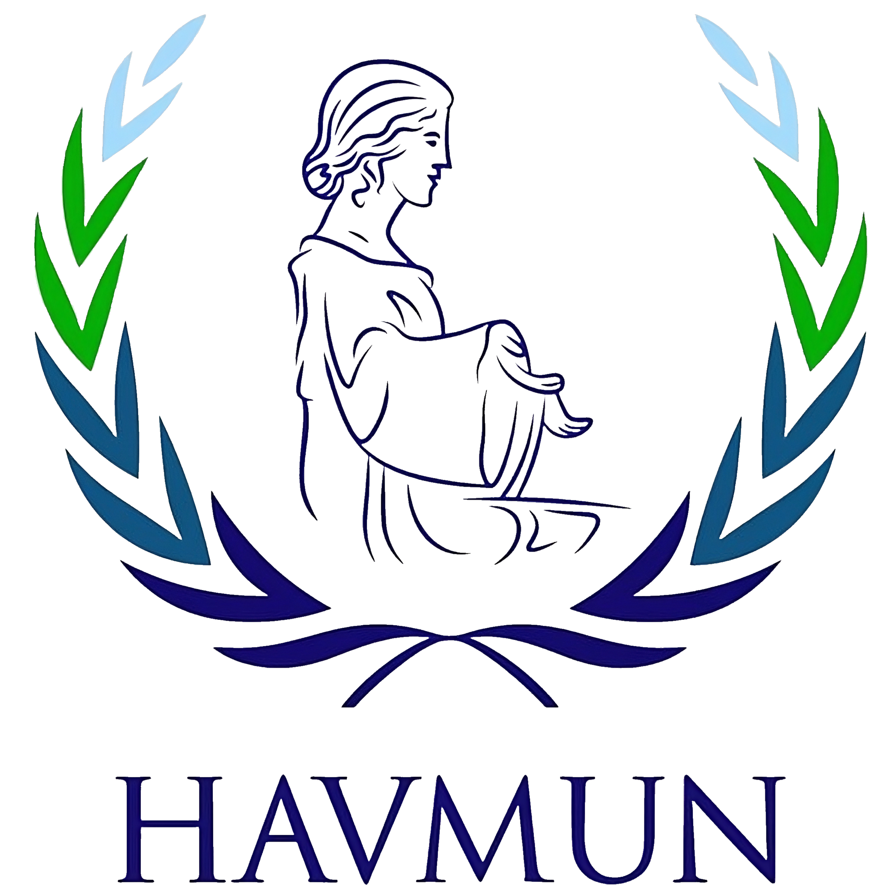

INICIO
EDICIÓN XXVIII
NUESTRO EQUIPO
HISTORIA DEL MODELO
DISEÑO ACADÉMICO
CÓMO PARTICIPAR
SISTEMA DE VOTACIÓN
CONTÁCTANOS
RECURSOS ACADÉMICOS
Noticias y documentos de interés
Derecho Nuclear-Debate Mundial
Examen periódico de las centrales nucleares
Informe Anual de OIEA(2022)
Labor del Comité Científico de las Naciones Unidas
Manual para las delegaciones.Sesión 78 AGNU
Nuclear Safety and Security
Protección radiológica y seguridad de las fuentes de radiación